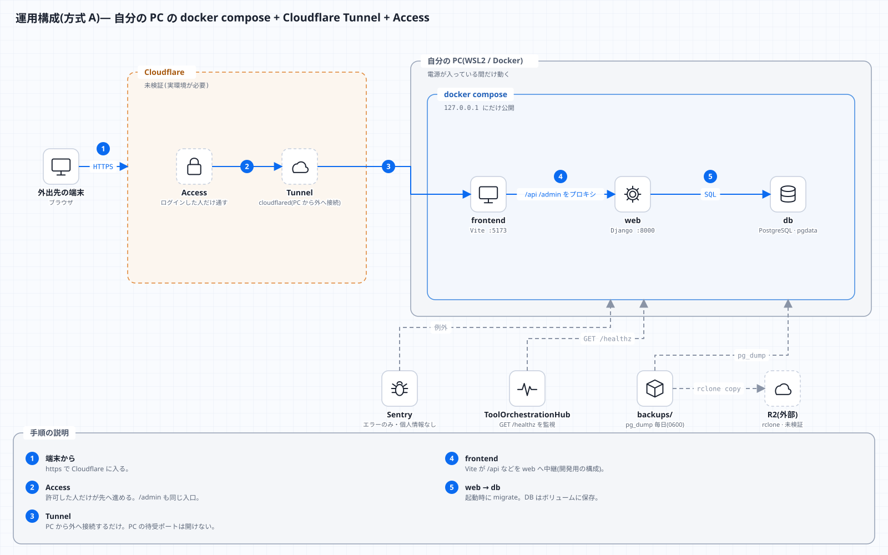

L16 運用 ― Docker・設定・Cloudflare・ログ・Sentry・障害対応
この回の目標
- コンテナ(Docker)と
docker composeの考え方を説明し、このアプリのdocker-compose.ymlを読める - 設定を環境変数で持つ理由と、安全側の既定値の設計を説明できる
- 外部公開の経路(Cloudflare Tunnel + Access)で、どこで何が守られるかを図で説明できる
- ログ・ヘルスチェック・Sentry を使って、障害の切り分けができる
- 更新・ロールバック・バックアップの手順を、理由とともに説明できる
正直に: Docker デーモンや Cloudflare の実環境がない場所で作ったため、
docker compose upの通し・Sentry への実送信・Cloudflare Access の実機検証は未検証です(operations.md に明記)。この回では、検証した部分は実際に動かし、未検証の部分は「どう確かめるか」を示します。
1. コンテナとは何か
アプリを動かすには、OS・言語・ライブラリの特定の版が要ります。「私の PC では動く」問題を避けるため、必要なものを全部まとめた箱(コンテナ)で動かします。
| 用語 | 意味 | 例え |
|---|---|---|
| イメージ | 箱の設計図(読み取り専用) | レシピ |
| コンテナ | イメージを実行している箱 | 料理 |
| Dockerfile | イメージの作り方 | レシピの手順書 |
| ボリューム | コンテナを消しても残るデータ置き場 | 冷凍庫(皿を洗っても残る) |
| compose | 複数のコンテナをまとめて起動・接続する | 献立 |
コンテナは軽い仮想マシンではなく、ホストの OS を共有しつつ、プロセス・ファイル・ネットワークを隔離したものです。
2. Dockerfile を読む(backend/Dockerfile)
FROM python:3.13-slim
ENV PYTHONDONTWRITEBYTECODE=1 PYTHONUNBUFFERED=1
WORKDIR /app
COPY requirements.txt .
RUN pip install --no-cache-dir -r requirements.txt
COPY . .
RUN DJANGO_ALLOW_INSECURE_KEY=1 python manage.py collectstatic --noinput \
&& useradd --create-home app && chown -R app /app
USER app
ENTRYPOINT ["/app/entrypoint.sh"]
1行ずつ:
| 行 | 意味と狙い |
|---|---|
FROM python:3.13-slim |
土台のイメージ。slim は余計なものが少なく小さい(=攻撃対象も小さい) |
ENV PYTHONUNBUFFERED=1 |
出力を溜めずにすぐ出す(ログが遅れない) |
COPY requirements.txt . → RUN pip install |
先に依存だけ入れる。ソースが変わっても、依存が変わらなければこの層はキャッシュされ再利用される(ビルドが速い) |
COPY . . |
その後でソースを入れる |
collectstatic |
静的ファイルを 1 か所に集める(WhiteNoise が配る)。ビルド時は秘密鍵が無いので DJANGO_ALLOW_INSECURE_KEY=1 をこの 1 コマンドにだけ付ける |
useradd app + USER app |
root で動かさない(万一侵入されても、できることが少ない=最小権限) |
ENTRYPOINT |
起動のたびに entrypoint.sh(L15)を通す |
層の順序の原則: 変わりにくいものを先に、変わりやすいものを後ろに。逆にすると、ソースを 1 文字直すたびに依存を全部入れ直します。
3. docker-compose.yml を読む
このアプリは 3 つのコンテナでできています。
注目点:
depends_on:
db:
condition: service_healthy
depends_on + service_healthy は、「db が健康になってから起動する」。単に「先に起動した」だけでは、PostgreSQL がまだ接続を受け付けず、migrate が失敗します。
healthcheck:
test: ["CMD-SHELL", "pg_isready -U $${POSTGRES_USER} -d $${POSTGRES_DB}"]
interval: 3s
timeout: 3s
retries: 20
- ヘルスチェックは「プロセスが生きている」ではなく「仕事ができる状態か」を確かめる(
pg_isready)。 $${…}— compose 自身の変数展開を避けて、コンテナの中のシェルに変数を渡す($を 2 つ)。
ports:
- "127.0.0.1:${WEB_PORT:-8000}:8000"
127.0.0.1:を付けると、PC 自身からしか見えない(LAN の他の端末からは届かない)。外部への公開は Cloudflare Tunnel の役目で、ポートを直接開けない。${WEB_PORT:-8000}— 環境変数があればそれ、なければ 8000(L15 のシェルと同じ書き方)。
logging: &logging
driver: json-file
options: { max-size: "10m", max-file: "3" } # ログのローテーションは Docker 側
- ログを溜め続けるとディスクが埋まる。1 ファイル 10MB・3 世代で上限を付ける。
&loggingは YAML のアンカー(名前を付けて、*loggingで使い回す)。
よく使うコマンド
| やりたいこと | コマンド |
|---|---|
| 起動(ビルドも) | docker compose up --build |
| 裏で起動 | docker compose up -d |
| ログを見る | docker compose logs -f web |
| 状態 | docker compose ps |
| コンテナの中でコマンド | docker compose exec web python manage.py shell |
| 止める(データは残る) | docker compose down |
| データも消す | docker compose down -v(pgdata が消える。バックアップ後に) |
4. 設定は環境変数で(Twelve-Factor)
コードは同じで、設定だけを環境ごとに変える ― 開発・本番で別のファイルを書き換えるより、環境変数で外から渡します。理由:
- 秘密をコードに入れない(Git に残らない)。
- 同じイメージを、開発・検証・本番でそのまま使い回せる。
- 設定の変更にコードの再ビルドが要らない。
settings.py の読み取りの部品を読みましょう。
def env_bool(name: str, default: bool = False) -> bool:
value = os.environ.get(name)
if value is None:
return default
return value.strip().lower() in {"1", "true", "yes", "on"}
def env_list(name: str, default: str = "") -> list[str]:
return [v.strip() for v in os.environ.get(name, default).split(",") if v.strip()]
import os
def env_bool(name, default=False):
value = os.environ.get(name)
if value is None:
return default
return value.strip().lower() in {"1", "true", "yes", "on"}
def env_list(name, default=""):
return [v.strip() for v in os.environ.get(name, default).split(",") if v.strip()]
os.environ["DEMO_FLAG_A"] = "1"
os.environ["DEMO_FLAG_B"] = "False"
os.environ["DEMO_FLAG_C"] = " YES "
os.environ["DEMO_HOSTS"] = "localhost, 127.0.0.1 ,,web"
print("A:", env_bool("DEMO_FLAG_A"), "/ B:", env_bool("DEMO_FLAG_B"), "/ C:", env_bool("DEMO_FLAG_C"))
print("未設定(既定 False):", env_bool("DEMO_FLAG_NONE"), "/ 未設定(既定 True):", env_bool("DEMO_FLAG_NONE", True))
print("ホスト一覧:", env_list("DEMO_HOSTS"))
print("空:", env_list("DEMO_HOSTS_NONE"))
A: True / B: False / C: True
未設定(既定 False): False / 未設定(既定 True): True
ホスト一覧: ['localhost', '127.0.0.1', 'web']
空: []
- 環境変数はすべて文字列。
"False"は文字列なので、そのままifに入れると真になる(Python では空でない文字列は真)。だからenv_boolで「真とみなす語」の集合と照合する。 - 空白・空要素の混入(
"a, b ,,c")を吸収する。
安全側の既定
SECRET_KEY = os.environ.get("DJANGO_SECRET_KEY", "")
if not SECRET_KEY:
if not (DEBUG or env_bool("DJANGO_ALLOW_INSECURE_KEY", False)):
raise RuntimeError("DJANGO_SECRET_KEY が未設定です(開発時は DJANGO_DEBUG=1 を指定)。")
SECRET_KEY = "insecure-dev-key-do-not-use-in-production"
DEBUGの既定は False(忘れても本番として安全な側に倒れる)。- 本番(
DEBUG=0)で秘密鍵が無ければ、起動を拒否する。「危険な設定のまま黙って動く」よりずっとよい(fail closed)。
設定の一覧(主なもの)
| 変数 | 役割 | 既定 |
|---|---|---|
DJANGO_SECRET_KEY |
署名用の秘密鍵 | (本番は必須) |
DJANGO_DEBUG |
デバッグ | 0 |
DJANGO_ALLOWED_HOSTS |
受け付ける Host | localhost 等 |
DJANGO_CSRF_TRUSTED_ORIGINS |
信頼するオリジン | 空 |
DJANGO_SECURE_COOKIES |
Cookie に Secure | 0(https で公開するとき 1) |
DJANGO_BEHIND_PROXY |
X-Forwarded-Proto を信じる |
0(Tunnel の背後で 1) |
POSTGRES_* |
DB 接続 | compose の既定 |
INGEST_API_KEYS |
取り込み API のキー(複数可) | 空 |
SENTRY_* |
監視 | DSN が空なら無効 |
5. 公開の経路 ― Cloudflare Tunnel と Access
自分の PC をインターネットに直接さらす(ルーターのポートを開ける)のは危険です。Cloudflare Tunnel は、PC から Cloudflare へ外向きの接続を張り、外からの通信をその中を通して受け取ります。Access は、その前に「誰か」を確かめる門番です。
守りが多層になっていることに注目してください。
| 層 | 守るもの | 無いと |
|---|---|---|
| Tunnel(外向き接続のみ) | PC のポートを開けない | ルーターに穴が開く |
| Access | 未認証者を門前払い | 誰でもログイン画面に到達 |
| (任意)JWT 検証 | Access を通っていない通信を拒否 | Tunnel を迂回した通信を信じてしまう |
| Django の認証・権限 | ユーザーごと・役割ごとの操作 | ログイン後は何でもできる |
127.0.0.1 バインド |
直接アクセスの禁止 | 同じ LAN から直接叩かれる |
「Access を信じる」の落とし穴:
Cf-Access-Authenticated-User-Emailのようなヘッダをそのまま信じると、Access を迂回した通信で偽装できます。このアプリは署名つきの JWT(Cf-Access-Jwt-Assertion)を検証する設計です(L09・auth.md)。
公開するときに変える設定:
- Tunnel のホスト名を
DJANGO_ALLOWED_HOSTS/DJANGO_CSRF_TRUSTED_ORIGINS/VITE_ALLOWED_HOSTSに入れる。 DJANGO_SECURE_COOKIES=1、DJANGO_BEHIND_PROXY=1(Tunnel が TLS を終端するため)。/admin/は Access でも保護する。- 秘密(
DJANGO_SECRET_KEY/POSTGRES_PASSWORD/INGEST_API_KEYS)を必ず変える。
DJANGO_BEHIND_PROXY の意味:
if env_bool("DJANGO_BEHIND_PROXY", False):
SECURE_PROXY_SSL_HEADER = ("HTTP_X_FORWARDED_PROTO", "https")
Tunnel が TLS(https)を終えて、Django には http で渡す。Django は自分が https かどうか分からないので、プロキシが付ける X-Forwarded-Proto を信じさせる。信用できるプロキシの背後でだけ有効にする(直接公開しているなら偽装できてしまう)。
6. 健康診断(/healthz)
@never_cache
@require_GET
def healthz(request):
"""死活監視(認証なし)。DB 接続の可否のみ返し、例外の中身は返さない。"""
try:
with connection.cursor() as cursor:
cursor.execute("SELECT 1")
cursor.fetchone()
except Exception:
logger.exception("healthz: database check failed")
return JsonResponse({"status": "error", "db": False}, status=503)
return JsonResponse({"status": "ok", "db": True})
読み解き:
- 本当に DB に問い合わせる(
SELECT 1)。アプリが生きていても DB に繋がらなければ「健康ではない」。 - 失敗は 503(一時的に提供できない)。監視ツールが検知できる。
- 例外の中身は返さない(
logger.exceptionでログにだけ残す)。認証なしで見える窓口に、内部情報(接続先・エラー文)を出さない。 never_cache— 古い「正常」をキャッシュに返さない。
from django.test import Client
res = Client().get("/healthz", HTTP_HOST="localhost")
print(res.status_code, res.json(), "| Cache-Control:", res["Cache-Control"])
200 {'status': 'ok', 'db': True} | Cache-Control: max-age=0, no-cache, no-store, must-revalidate, private
7. ログ ― 機械が読める形で
ログは 1 行 1 JSON で標準出力へ出します。
class JsonFormatter(logging.Formatter):
def format(self, record: logging.LogRecord) -> str:
payload = {
"time": datetime.fromtimestamp(record.created, tz=timezone.utc).isoformat(),
"level": record.levelname,
"logger": record.name,
"message": record.getMessage(),
}
if record.exc_info:
payload["exc"] = self.formatException(record.exc_info)
return json.dumps(payload, ensure_ascii=False)
import json
import logging
from config.logging_json import JsonFormatter
record = logging.LogRecord("tracker.demo", logging.WARNING, "demo.py", 1, "状態を変更できません: %s", ("task=12",), None)
line = JsonFormatter().format(record)
parsed = json.loads(line)
print(sorted(parsed))
print(parsed["level"], parsed["logger"], parsed["message"])
try:
1 / 0
except ZeroDivisionError:
import sys
err = logging.LogRecord("tracker.demo", logging.ERROR, "demo.py", 1, "失敗", (), sys.exc_info())
parsed = json.loads(JsonFormatter().format(err))
print("例外つき:", "exc" in parsed, "|", parsed["exc"].splitlines()[-1])
['level', 'logger', 'message', 'time']
WARNING tracker.demo 状態を変更できません: task=12
例外つき: True | ZeroDivisionError: division by zero
なぜ JSON か: grep や jq で絞り込め、ログ基盤へそのまま取り込める。メッセージ内の改行(スタックトレース)も exc フィールドに収まり、1 行が 1 件を保てる。
何をログに出さないか:
- パスワード・トークン・API キー・Cookie(ログは広く読まれ、長く残る)。
- 個人情報は最小限(
send_default_pii=False)。
ログレベルの使い分け
| レベル | 使いどころ |
|---|---|
| ERROR | 人が対応すべき失敗(Sentry へも飛ぶ) |
| WARNING | 異常だが継続できる(認証の失敗が続く等) |
| INFO | 通常の重要な出来事(起動・取り込み完了) |
| DEBUG | 開発時の詳細(本番では出さない。LOG_LEVEL で切替) |
8. Sentry ― 例外を集めて通知する
エラー監視サービスです。DSN(送信先)を設定したときだけ有効になります。
sentry_sdk.init(
dsn=SENTRY_DSN,
environment=os.environ.get("SENTRY_ENVIRONMENT", "development" if DEBUG else "production"),
release=os.environ.get("SENTRY_RELEASE") or None,
send_default_pii=False, # 個人情報(ユーザー名・IP・Cookie 等)を送らない
traces_sample_rate=float(os.environ.get("SENTRY_TRACES_SAMPLE_RATE", "0")),
sample_rate=float(os.environ.get("SENTRY_SAMPLE_RATE", "1.0")), # 無料枠対策のサンプリング
before_send=scrub_event,
)
| 設定 | 意味 |
|---|---|
environment |
development / production を分ける(通知の絞り込み) |
release |
どの版で起きたか(原因の特定) |
send_default_pii=False |
個人情報を送らない |
sample_rate |
エラーを送る割合(量・費用の調整) |
traces_sample_rate |
性能計測の割合(既定 0 = 送らない) |
before_send=scrub_event |
送る直前に機密を落とす最後の関所 |
その「関所」が scrub_event です。
def scrub_event(event, hint=None):
request = event.get("request")
if request:
headers = request.get("headers")
if isinstance(headers, dict):
for name in list(headers):
if name.lower() in SENSITIVE_HEADERS:
headers[name] = "[Filtered]"
request.pop("cookies", None)
request.pop("data", None) # リクエスト本文(コメント・パスなど)は送らない
return event
from tracker.sentry import scrub_event
event = {
"message": "boom",
"request": {
"url": "https://tracker.example.com/api/v1/tasks/12/transition/",
"headers": {"Authorization": "Token abc", "X-API-Key": "k", "Cookie": "sessionid=s", "User-Agent": "curl", "x-csrftoken": "t"},
"cookies": {"sessionid": "s"},
"data": {"comment": "社外秘のメモ"},
},
}
cleaned = scrub_event(event)
print(cleaned["request"]["headers"])
print("cookies あり:", "cookies" in cleaned["request"], "/ data あり:", "data" in cleaned["request"])
print("URL は残る:", cleaned["request"]["url"])
{'Authorization': '[Filtered]', 'X-API-Key': '[Filtered]', 'Cookie': '[Filtered]', 'User-Agent': 'curl', 'x-csrftoken': '[Filtered]'}
cookies あり: False / data あり: False
URL は残る: https://tracker.example.com/api/v1/tasks/12/transition/
- 機密のヘッダは値だけ
[Filtered]に(ヘッダがあったことは残り、調査の手がかりになる)。 - 大文字小文字の違いを
name.lower()で吸収する(X-API-Keyもx-csrftokenも)。 - Cookie と本文は丸ごと削除。
- ここで落とし漏らしがあれば、秘密が外部サービスに残るので、ヘッダの種類を増やしたら
SENSITIVE_HEADERSに必ず足す。
9. 障害の切り分け(ランブック)
症状から、範囲を狭めていくのが基本です。
| 症状 | まず見る場所 | よくある原因 |
|---|---|---|
| 起動直後に web が落ちる | docker compose logs web |
DJANGO_SECRET_KEY 未設定/migrate の制約違反(既存データ) |
DisallowedHost / 400 |
例外メッセージの Host | DJANGO_ALLOWED_HOSTS にドメインが無い |
| ログインできるのに操作が 403 | ブラウザのネットワークタブ | CSRF の信頼オリジン、Cookie の Secure 設定の不整合 |
| 取り込みが 401/403 | スクリプトの出力 | INGEST_API_KEY と INGEST_API_KEYS の不一致 |
| 取り込みが 429 | Retry-After |
取り込みの上限(INGEST_THROTTLE_RATE) |
| 画面が古い・更新されない | Cache-Control |
Cloudflare のキャッシュ規則(/api/* は no-store に) |
| ディスクが埋まる | docker system df |
ログのローテーション無し/古いイメージ/バックアップの溜めすぎ |
心得: まず読む(ログ・エラーメッセージ)。推測で設定を触り始めない。1 回に 1 つだけ変えて、結果を見る。
10. 更新・ロールバック・バックアップ
詳細は operations.md。手順の理由を押さえます。
| 手順 | 理由 |
|---|---|
| ① 先にバックアップ | マイグレーションは前方のみ。失敗しても DB を戻せる唯一の方法 |
| 制約を足すときは別 DB で試す | 既存データが新しい制約に違反していると失敗する(例: demo と DEMO)。本番で初めて知るのを避ける |
| ③ 健康診断を確かめる | 「起動した」と「動いている」は別 |
| ④ ロールバックは DB ごと | コードだけ戻しても、進んだスキーマとずれる |
| 数か月に 1 回、復元を試す | 取れているだけでは不十分(L15) |
11. セキュリティの運用面(OWASP API Top 10 との対応)
設計と実装は security.md に、検証は test_security_audit.py にあります。運用で意識するのは次の点です。
| 観点 | 運用で |
|---|---|
| 認証の壊れ | 弱い鍵・初期パスワードを必ず変える。API キーは定期的に差し替える |
| 設定の誤り | DEBUG=0、ALLOWED_HOSTS を絞る、manage.py check --deploy を実行 |
| 資源の制限 | レート制限・ページサイズ上限・リクエスト本文の上限 |
| 機密の漏洩 | ログ・Sentry・エラー応答に秘密を出さない |
| 在庫管理 | どのエンドポイントがあるかを把握(docs/ と監査テストの表) |
| 依存の更新 | 脆弱性情報の確認と、アップグレードの定期実施 |
cd backend
DJANGO_DEBUG=0 DJANGO_SECRET_KEY="$(python -c 'import secrets; print(secrets.token_urlsafe(64))')" python manage.py check --deploy
12. 全体のマップ(図)
運用に関わる図は docs/diagrams/ にあります。


よくある間違い
| 間違い | 正しくは |
|---|---|
down -v を気軽に打つ(データが消える) |
バックアップしてから。普段は down |
| ポートをホスト全体に公開する | 127.0.0.1: を付ける。公開は Tunnel |
| Access のヘッダ(メールなど)をそのまま信じる | 署名つき JWT を検証する |
本番で DEBUG=1 |
DEBUG=0。秘密鍵が無ければ起動しない設計を保つ |
| 設定を環境変数でなくコードに書く | 環境変数。秘密は .env(Git に入れない) |
| ログに秘密を出す / Sentry に本文を送る | scrub_event とログの方針で落とす |
| 更新前にバックアップしない | 必ず先に backup.sh |
| 原因を推測で設定変更する | ログを読み、1 つずつ変える |
確認問題
- イメージとコンテナ、ボリュームの違いを述べよ。
- Dockerfile で
requirements.txtだけ先にコピーしてpip installするのはなぜか。 depends_on: condition: service_healthyが無いと、何が起きうるか。ports: "127.0.0.1:8000:8000"と"8000:8000"の違いは。- 環境変数の
"False"をifにそのまま渡すとなぜ危険か。このアプリはどう扱うか。 /healthzが、例外の中身を返さないのはなぜか。scrub_eventでname.lower()を使うのはなぜか。- 更新の前に必ずバックアップを取るのはなぜか。
答え
- イメージ=設計図、コンテナ=それを実行している箱、ボリューム=コンテナを消しても残るデータ置き場。
- 依存が変わらない限りこの層はキャッシュされ、ソースを直すたびに依存を入れ直さずに済む(ビルドが速い)。
- DB がまだ接続を受け付けないうちに web が起動して、
migrateが失敗する。 - 前者は PC 自身からしか届かない。後者は同じネットワークの他の端末からも直接届く。
- 環境変数は文字列で、空でない文字列は真になるため、「False」が真として扱われる。
env_boolが「真とみなす語」の集合と照合する。 - 認証なしで見える窓口に内部情報(接続先・エラー文)を出さないため。詳細はログにだけ残す。
Authorizationとauthorizationのように大文字小文字が違っても同じヘッダとして扱い、落とし漏らしを防ぐため。- マイグレーションは前方のみで、失敗したときに DB を元に戻す確実な方法がバックアップだけだから。
次へ
L17 総合演習 ― 学んだことを使って、機能を足してみる。